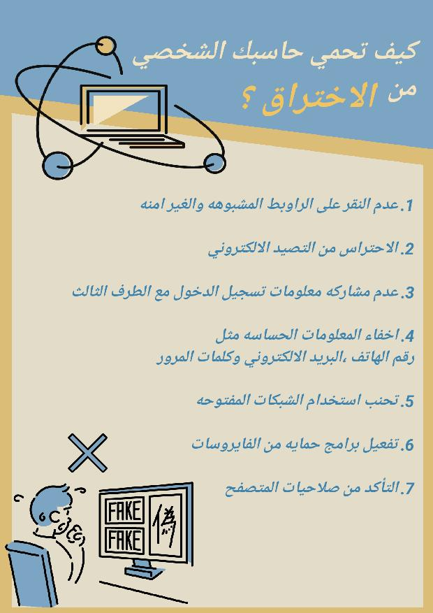

كيف احمي الحاسب الشخصي من الاختراق؟

- تحديث البرامج والنظام: تأكد من تثبيت جميع التحديثات والتصحيحات الأمنية الخاصة بنظام التشغيل والبرامج المثبتة على الحاسوبي
-
استخدام برنامج مكافحة الفيروسات والبرمجيات الخبيثة:
قم بتثبيت برنامج مكافحة الفيروسات والبرمجيات الخبيثة وتحديثه بانتظام. قدم له فحوص دورية
- تفعيل جدار الحماية:
قم بتفعيل جدار الحماية الذي يأتي مع نظام التشغيل الخاص بك للحماية من محاولات الاختراق
- استخدام كلمات مرور قوية:
استخدم كلمات مرور قوية وفريدة لحساباتك المختلفة، وقم بتغييرها بانتظام
- تفعيل التحقق الثنائي:
قم بتفعيل التحقق الثنائي عندما يكون ذلك ممكنًا، حيث يتطلب منك إدخال رمز إضافي بجانب كلمة المرور
-
توخي الحذر عند البريد الإلكتروني:
لا تقم بفتح المرفقات أو الروابط في رسائل البريد الإلكتروني من مصادر مجهولة
- تقييد حقوق الوصول:
قم بتقييد حقوق الوصول للبرامج والملفات، ومنح الصلاحيات اللازمة فقط